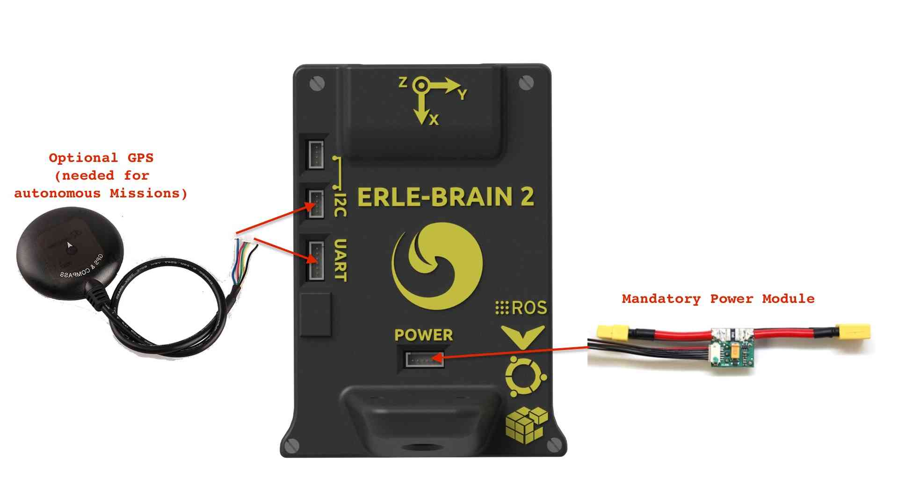
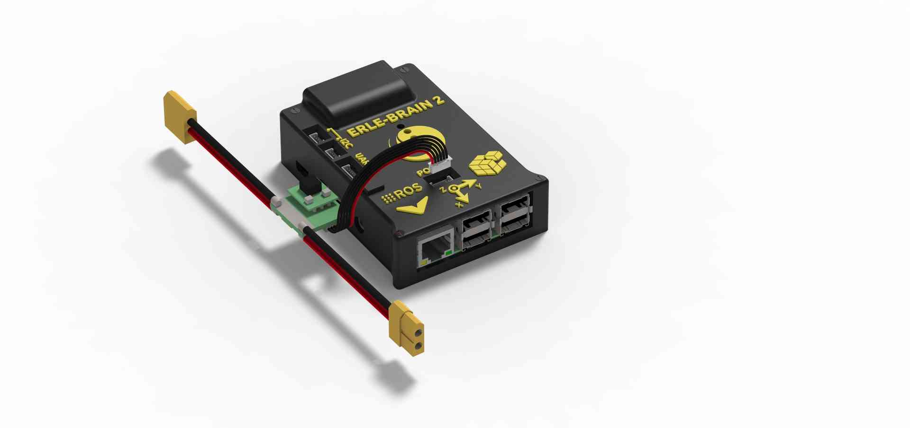
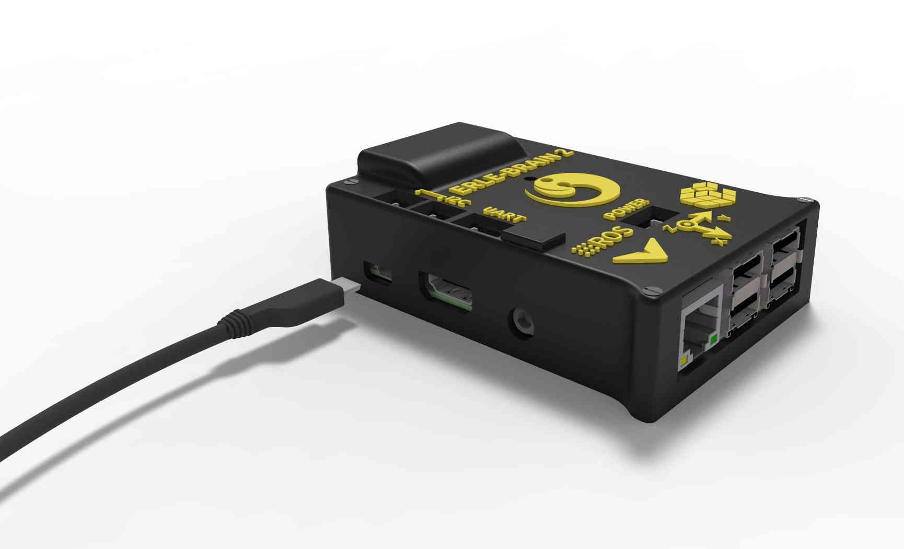

Archived Topic: Erle-Brain2 Wiring Quick Start¶
This article provides high level information about how to power Erle-Brain2 and connect its most important peripherals.
Erle-Brain2 Wiring Chart¶
{kind=link}
[site wiki=”copter”] Copter users should also see the official setup documentation. [/site]
Power Erle-Brain2¶
Erle-Brain2 is typically powered via its “power” port, as shown in the picture below. The power port simultaneously powers Erle-Brain2 and reads voltage and current analog measurements.
{kind=link}
Additionally, for developing/configuration purposes, it can be powered using a micro USB charger (2A recommended), as shown in the below picture.
{kind=link}
Warning
Always use a power module to feed Erle-Brain2 while flying your drone
Connect remote control inputs¶
Erle-Brain2 is compatible with PPM remote control (RC) receivers. For traditional single-wire-per-channel (PWM) receivers a PPM encoder can be used to convert the receiver outputs to PPM-SUM.
For more information see Compatible RC Transmitter and Receiver Systems (Erle-Brain 2).

FRSky Taranis Transmitter¶
GPS+Compass¶
The uBlox GPS + Compass Module is the recommended GPS for Erle-Brain2. The GPS port is connected with the six-position DF13 cable, and the Compass port is connected to the I2C port with the four-position DF13 cable, as shown in the wiring chart above.
Connect Motors¶
{kind=link}
Note
Be aware of how you connect ESCs wires to PWM rail. The signal wire (white or orange color) should be connected at the top, the ground wire (black or brown color) at the bottom.
[site wiki=”copter”]
For Copter see Connect ESCs and Motors.
In overview, for copters connect each signal wire from the PDB to the main output signal (S) pins by motor number:
Pin 1 = Motor 1 - - Pin 5 = Motor 5
Pin 2 = Motor 2 - - Pin 6 = Motor 6
Pin 3 = Motor 3 - - Pin 7 = Motor 7
Pin 4 = Motor 4 - - Pin 8 = Motor 8
[/site]
[site wiki=”plane”]
For planes connect the control channel wires to the main output signal pins:
Pin 1 = Aileron
Pin 2 = Elevator
Pin 3 = Throttle
Pin 4 = Rudder
[/site]
[site wiki=”rover”]
For Rovers connect the throttle and steering wires to the main output signal pins:
Pin 3 = Throttle
Pin 1 = Steering
[/site]
USB ports¶
Erle-Brain2 has four USB ports. Some of the devices you can connect are listed in the following section.
WiFi dongle¶
Use a (regular or high gain) WiFi dongle to create a hotspot that can, for example, be used for sending telemetry data and commands to a Ground Station. Erle-Brain2 automatically generates a WiFi hotspot when the dongle is connected.
Note
Edimax AC (regular and high gain) are the officially supported dongles. These can be purchased from Erle-Brain with your autopilot/vehicle.
Bluetooth dongle¶
Use a Bluetooth dongle to connect additional devices, such as joysticks.
Note
You will need to configure BlueTooth interface to make it work
Connect other peripherals¶
Depending on your hardware there may be any number of other peripherals attached, including sensors, cameras, grippers etc. These can be found as sub-pages of the topic Optional Hardware.
More information in official documentation.